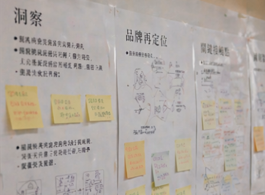
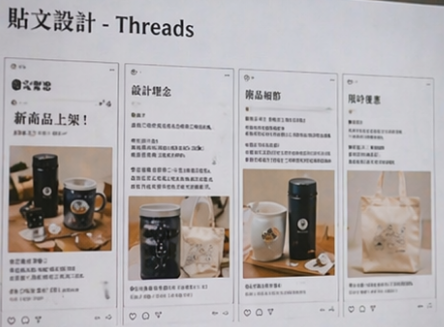
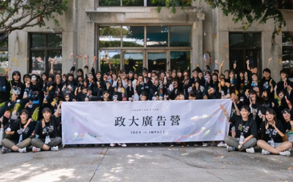
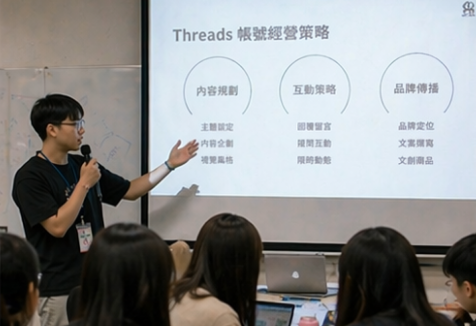

品牌企劃
消費者洞察與品牌再定位分析
消費者研究
品牌再定位
公關策略與企劃課程
以課程專題為背景，針對特定品牌進行深度消費者洞察研究，結合競品分析與市場趨勢，提出品牌形象調整方向與後續溝通建議，協助品牌找到更精準的市場定位。
行動與成果
- 設計問卷並進行深度訪談，蒐集消費者對品牌的真實認知與情感連結。
- 完成競品矩陣分析，找出品牌在市場中的定位空白與機會點。
- 提出品牌再定位方向，包含目標族群調整、溝通語氣與視覺風格建議。
- 整合研究結果與策略建議，以完整簡報呈現分析脈絡與執行方向。
問題解決
品牌認知與自我定位落差
品牌自我認知與消費者實際感受存在明顯落差。
→透過質化訪談挖掘消費者真實感受，作為再定位策略的核心依據。
競品差異化不明顯
市場中同類品牌眾多，難以找到清晰的差異化切入點。
→建立競品感知地圖，從情感價值與功能價值雙軸找出定位空白。
運用技能
- 質化訪談與問卷設計
- 競品矩陣分析與感知地圖
- 品牌定位與再定位策略
- 研究成果整合與策略簡報
作品資訊
- 類別 品牌企劃
- 課程 公關策略與企劃
- 時間 2024 年
- 所屬單位 國立政治大學廣告學系
- 查看作品成果